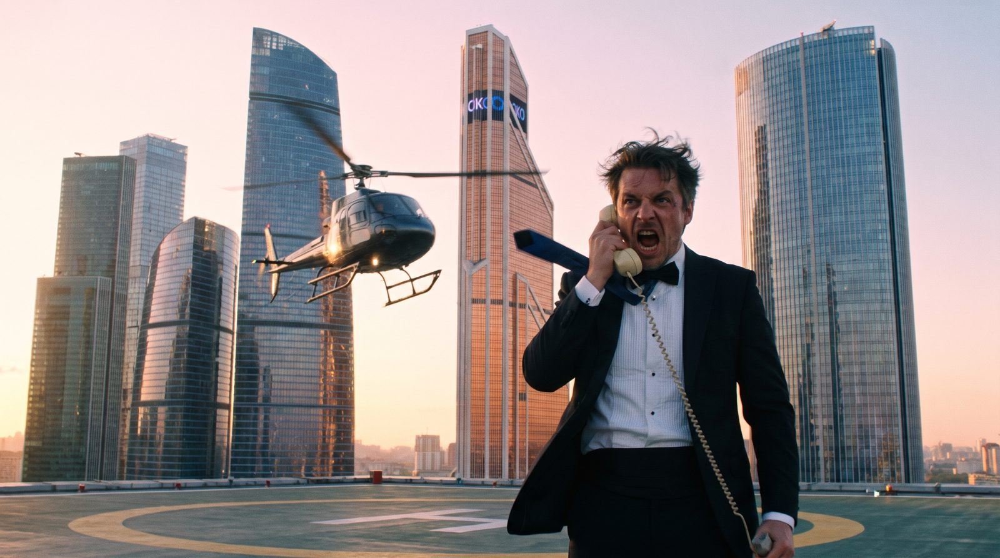

Сцена 1 · 0-6 с
Крыша Москва-Сити, рассвет
Ивент-директор бренда в смокинге на вертолётной площадке. За спиной взлетает вертолёт, ветер рвёт галстук. Кричит в трубку.
Босс: «Открытие через шесть часов! Сорок промоутеров слились! Мне нужны ЛЮДИ!»